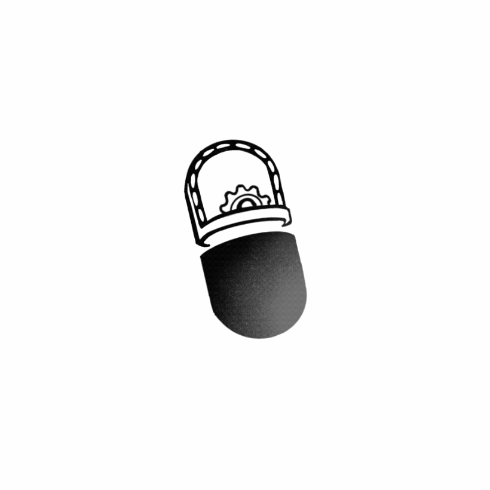

Manganese peroxidase (MnP) is a highly glycosylated, heme-containing1 lignin peroxidase. It is derived from white-rot fungi in carbon or nitrogen deficiency environment. In many reports, it can be used to oxidatively degrade lignin and azo dyes. The oxidation effect of MnP comes from the Mn3+ produced by the hydrogen peroxide-dependent oxidation of Mn2+.
Fig 1 Catalytic cycle of manganese peroxidase.2
The heme ligand in the active center of MnP can progressively form complex I-complex III in the presence of hydrogen peroxide. The Mn3+ produced in the process will form a complex with oxalate and be released from the enzyme, becoming a kind of Diffusion redox medium.
On this basis, we designed a molecular machine with MnP as the main functional enzyme, hoping to use the oxidation properties of MnP to degrade polyethylene.When verifying the process of molecular machines, we found that the stability of manganese peroxidase in the actual working environment needs to be improved. Therefore, we hope to use directed evolution to optimize the performance of MnP.
Reference
1 Martínez, A. T. et al. Oxidoreductases on their way to industrial biotransformations. Biotechnol Adv 35, 815-831, doi:10.1016/j.biotechadv.2017.06.003 (2017).
2 Kumar, A. & Chandra, R. Ligninolytic enzymes and its mechanisms for degradation of
lignocellulosic waste in environment. Heliyon 6, e03170-e03170,
doi:10.1016/j.heliyon.2020.e03170 (2020).